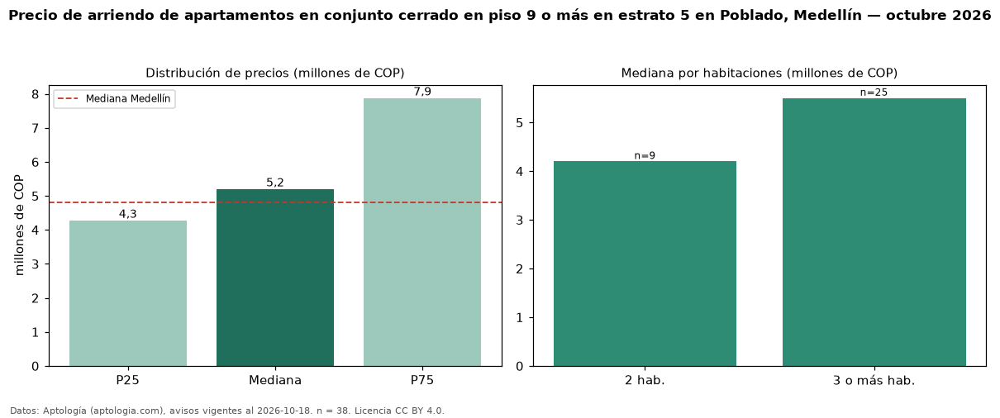

Precio de arriendo de apartamentos en conjunto cerrado en piso 9 o más en estrato 5 en Poblado, Medellín — octubre 2026
En Poblado, Medellín, la mediana de canon mensual de apartamentos en conjunto cerrado en piso 9 o más en estrato 5 es COP 5,20 millones, según 38 avisos vigentes. Frente a la mediana de los apartamentos en conjunto cerrado en estrato 5 en arriendo de Poblado (COP 4,80 millones, n = 110), queda 8 % por encima; este segmento reúne el 35 % de esos avisos. Por metro cuadrado, la mediana es COP 59.006/m² al mes (n = 37), 8 % por encima de los apartamentos en conjunto cerrado en estrato 5 en arriendo de Poblado (COP 54.455/m²). El área mediana anunciada es 98 m². El segmento con más oferta es el de 3 o más habitaciones (25 avisos, mediana COP 5,50 millones); pasar de 2 habitaciones a 3 o más habitaciones cambia la mediana +31 %. La mitad central de los avisos va de COP 4,28 millones a COP 7,88 millones (razón 1,8), una dispersión moderada. La mediana de todos los apartamentos en arriendo de Medellín es COP 4,80 millones (+8 % de diferencia). 74 % de los avisos con el dato declara parqueadero. Datos: Aptología (aptologia.com), CC BY 4.0 — https://www.aptologia.com/arriendo/medellin/poblado. Archivos: PDF, CSV con las cifras y gráfica PNG.

| Avisos únicos | 38 |
|---|---|
| Percentil 25 | COP 4.275.000 |
| Mediana | COP 5.200.000 |
| Percentil 75 | COP 7.875.000 |
| Mediana por m² | COP 59.006 |
Fuente: avisos vigentes de portales inmobiliarios recopilados por Aptología, deduplicados (mínimo 30 avisos únicos por celda). Precios pedidos, no cerrados. Fecha: 2026-10-18.